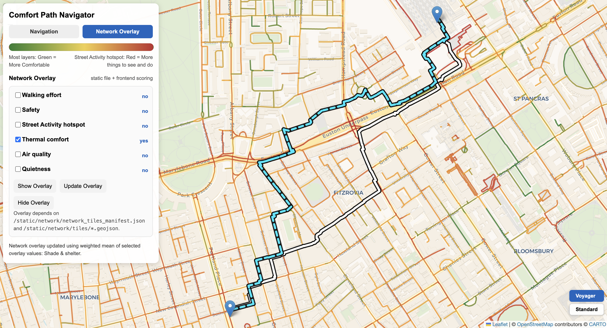
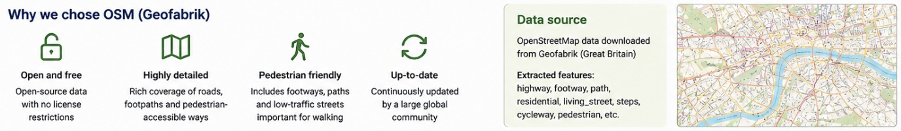
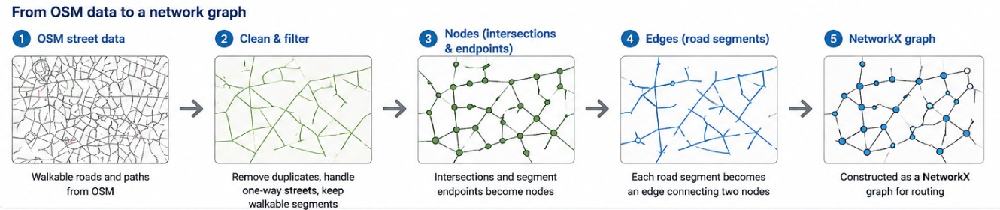
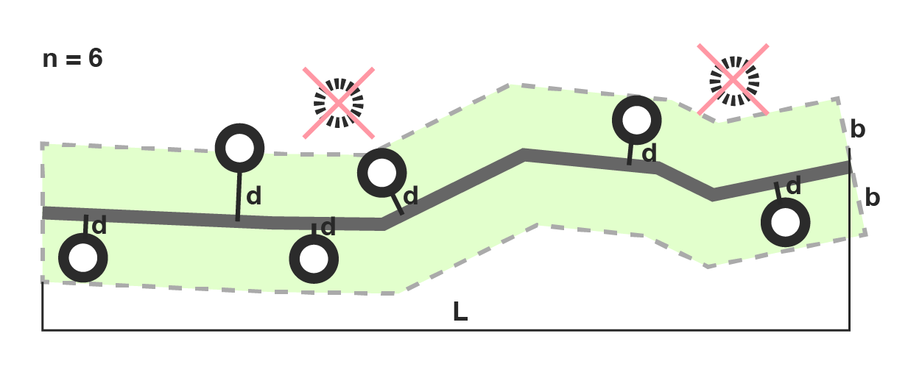
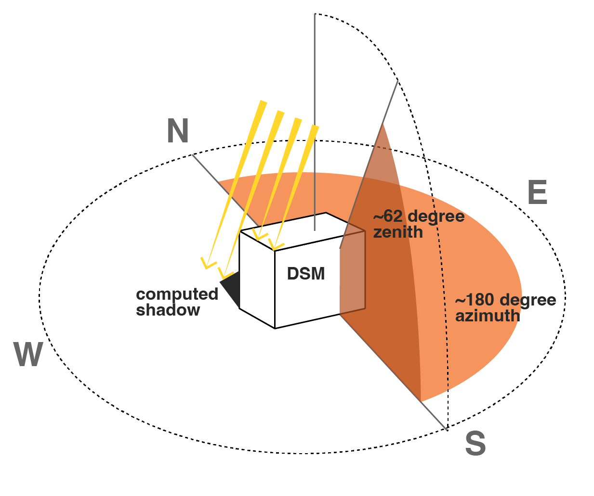
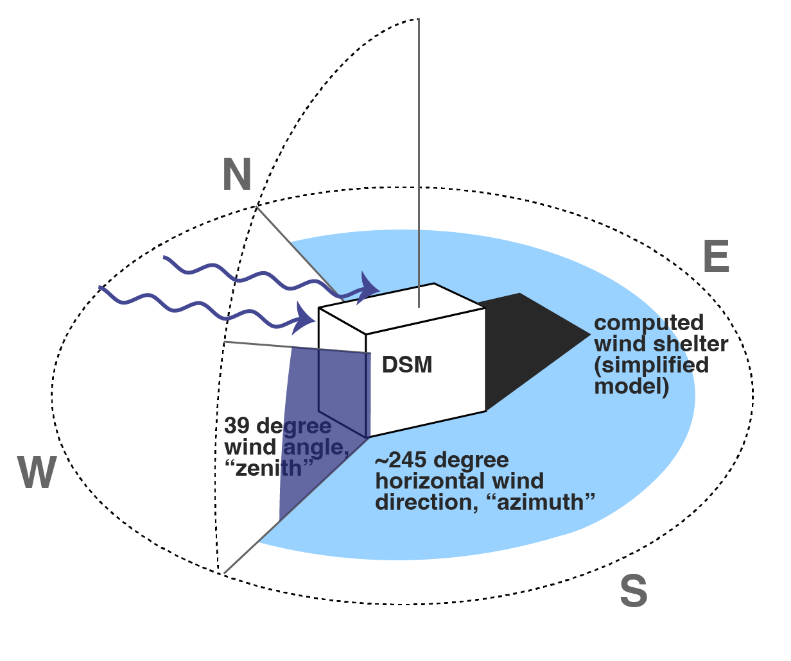
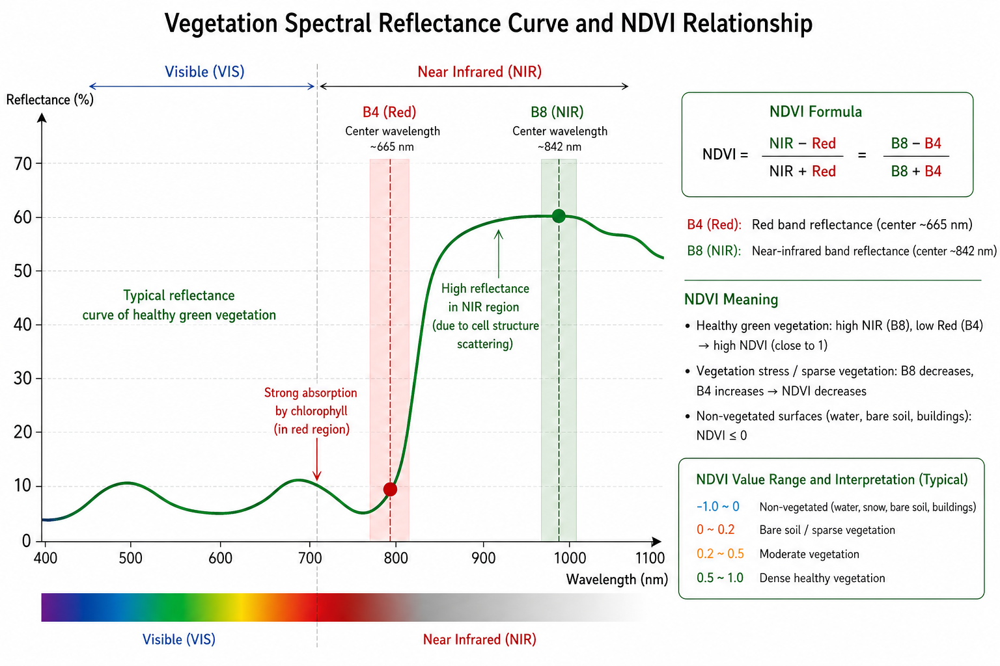
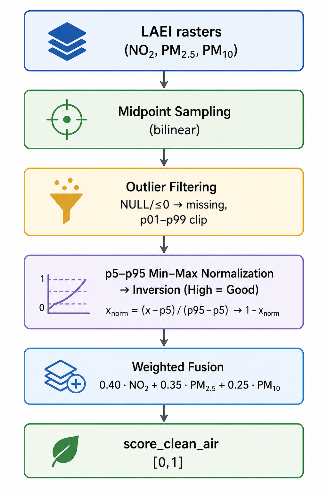
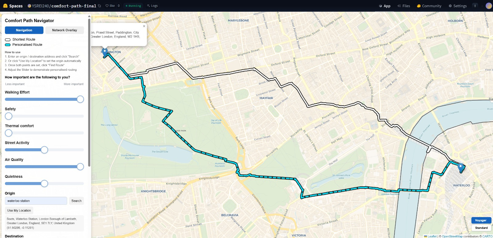

Comfort Path: Explore walkable streets across London
The application

Our project enables a wide range of users to analyse the walkability of London’s streets and explore specific routes.
Data and Methodology
{kind=link}
We transformed the scores into penalties, and applied them on a network graph with the following routing cost formula:
\[ \begin{aligned} \mathrm{edge\_cost} ={}& w_{\mathrm{length}} \cdot \mathrm{length\_norm} \\ &+ w_{\mathrm{safety}} \cdot \mathrm{unsafety\_penalty} \\ &+ w_{\mathrm{activity}} \cdot \mathrm{inactivity\_penalty} \\ &+ w_{\mathrm{walk}} \cdot \mathrm{walking\_effort\_penalty} \\ &+ w_{\mathrm{shade}} \cdot \mathrm{lack\_shade\_shelter\_penalty} \\ &+ w_{\mathrm{air}} \cdot \mathrm{polluted\_air\_penalty} \\ &+ w_{\mathrm{noise}} \cdot \mathrm{road\_noise\_penalty} \end{aligned} \]
Contributions
Network Graph
How did we build the network graph and why we chose OSM


Indicators: Things to see & do, Safety
“Hot routes” originally developed (Tompson, Partridge and Shepherd, 2009) to better represent on-route concentrations. \[ \text{KDE}_{\text{segment}} = \frac{ \sum_{i=1}^{n} e^{-0.5 \times \left(d_i / b\right)^2} }{ \text{L} } \]

Indicators: Shade and shelter


GEE script using ee.Terrain.hillShadow() with England 1m DSM for sun and wind + mean wind speeds + mean surface temperature
Wind direction and wind pseudo-shadows
// WIND DIRECTION
var wind = windSource
.filterBounds(london)
.filterDate('2025-10-19', '2026-03-19')
.select(['u_component_of_wind_10m', 'v_component_of_wind_10m'])
.mean()
.clipToCollection(london);
// direction wind blows TO
var windTo = wind.expression(
'(atan2(u, v) * 180 / pi + 360) % 360', {
u: wind.select('u_component_of_wind_10m'),
v: wind.select('v_component_of_wind_10m'),
pi: Math.PI
}).rename('wind_to');
// convert to direction wind comes FROM
var windFrom = windTo.add(180).mod(360).rename('wind_from');
var meanWindFrom = ee.Number(
windFrom.reduceRegion({
reducer: ee.Reducer.mean(),
geometry: london,
scale: 1000,
bestEffort: true,
maxPixels: 1e8
}).get('wind_from')
);
// 0 = sheltered, 1 = exposed
var windShelterRaw = ee.Terrain.hillShadow({
image: londonDsmMerc,
azimuth: meanWindFrom,
zenith: 39,
neighborhoodSize: 9,
hysteresis: false
});
// 1 = wind protected, 0 = not protected
var windProtected = windShelterRaw.eq(0)
.rename('wind_protected')
.toFloat()
.setDefaultProjection(targetProj);ee.Reducer.mean() over multi-band raster
Indicators: NDVI (Green space exposure)
NDVI was derived from Sentinel-2 (2023, cloud < 35%) using the classic approach. Values are sampled at each road segment’s midpoint, mapped from [-1, 1] to [0, 1], then fused with shade & shelter at equal weight and re-normalised (p5-p95) into score_shade_shelter_final.
\[ \text{NDVI} = \frac{\text{NIR} - \text{Red}}{\text{NIR} + \text{Red}} = \frac{B8 - B4}{B8 + B4} \]

GEE acquisition
Fusion with shade & shelter
# NDVI mapped from [-1,1] to [0,1]
score_green_ndvi = (ndvi + 1.0) / 2.0
# Merge 50/50 with shade, then p5-p95 normalisation
score_shade_ndvi_raw = 0.5 * shade_score + 0.5 * score_green_ndvi
p5, p95 = np.percentile(score_shade_ndvi_raw, [5, 95])
score_shade_shelter_final = np.clip(
(score_shade_ndvi_raw - p5) / (p95 - p5), 0.0, 1.0
)Scripts: download_ndvi_from_gee.py · ndvi_service.py
Indicators: Clean air
NO₂, PM₂.₅, and PM₁₀ were sampled at each road segment’s midpoint from LAEI rasters. NULL and ≤0 values treated as missing, then each pollutant normalised (p5-p95) and reversed.
\[ \begin{array}{l} \text{air} =\; 0.40 \cdot \text{NO}_2 \\ +\; 0.35 \cdot \text{PM}_{2.5} \\ +\; 0.25 \cdot \text{PM}_{10} \end{array} \]

Indicators: Noise
Road traffic noise (Lden/Lday) was sampled at each road segment’s midpoint from DEFRA noise rasters. Outlier handling follows the same procedure as air quality: NULL and ≤0 values are treated as missing, filled via median imputation, and clipped at p1–p99.
Unlike air quality, noise uses a fixed physical range for normalisation:
\[ \text{score\_not\_too\_noisy} = 1 - \frac{\text{dB} - 40}{85 - 40} \]
Each road segment is scored on the [40, 85] dB interval, then reversed so higher scores indicate quieter streets. The routing engine uses score_not_too_noisy directly. Script.
Indicators: Walking effort
Slope was derived from a DEM (Shuttle Radar Topography Mission (SRTM GL1) Global 30m).
The script for this part can be found here.

Building the application

Thank you!
CASA0025 Group 1
Authors: Yu Shi, Anna Saveleva, Yuqian Lin